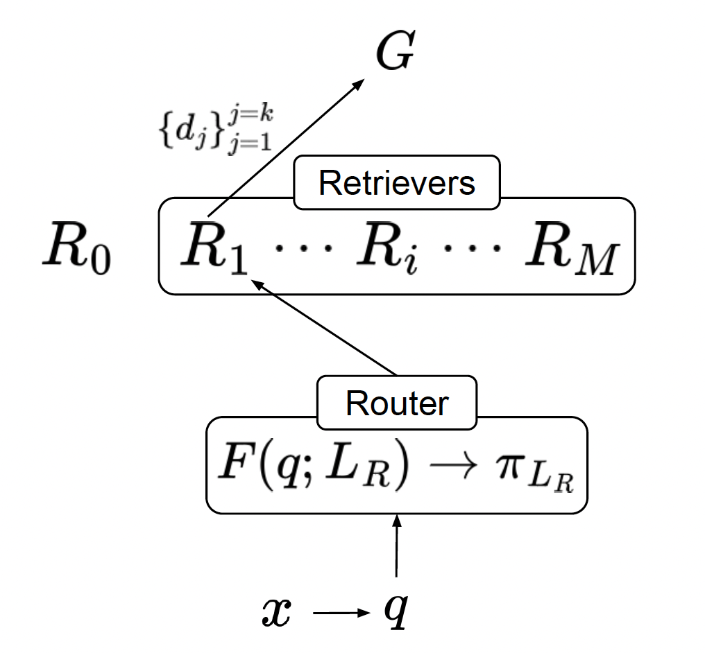

|
(Danny) To Eun Kim
김도은
toeunkim{at}cmu{dot}edu
(View from wider screen to see with pictures!)
I'm a third year PhD student at CMU Language Technologies Institute (LTI), advised by Prof. Fernando Diaz.
My research interests span the fields of Natural Language Processing (NLP) and Information Retrieval (IR),
with recent emphasis on retrieval-enhanced machine learning (REML) and known-item retrieval.
Prior to CMU, while I was in the UK,
I was a graduate researcher at Web Intelligence Group, University College London (UCL),
where I received M.Eng. in Computer Science in 2022.
I was working with Prof. Emine Yilmaz and Prof. Aldo Lipani
on Conversational AI and User Simulation.
Also, I was a member of both Knowledge Graphs
and NLP interest group at The Alan Turing Institute.
During the summer of 2022, I interned at Raft as a Machine Learning Engineer,
automating the paperwork in freight forwarding industry by OCR and NLP.
From May 2021, I joined team Condita as a main developer to compete in the first Amazon Alexa Prize TaskBot Challenge,
where I spent significant amount of time, constructing a real-time, multi-modal, knowledge-intensive, and interactive conversational assistant;
our team has made to the quarterfinals.
During my undergraduate degree, I worked with Prof. Marianna Obrist at UCL (Human-Computer) Interaction Centre,
finding ways to cluster text-based stories by authors' smell experience.
I take pride in being one of the early members of the UCL Artifical Intelligence Society, and during my three years of active involvement,
I had the privilege of founding the first Machine Learning tutorial series, which has become an annual tradition.
CV /
Google Scholar /
Blog /
X.com /
GitHub
|

|
|
Research
- Retrieval-Enhanced Machine Learning (REML) and RAG
- REML Framework:
- Efficient and Effective RAG:
- Real-World AI Systems
- Data Provider Retention and Attribution:
- Advertisement in Conversational Search:
- Full-Stack Chatbot Development:
- Asking Clarifying Questions:
- Simulated Evaluation and Benchmarking of AI Systems
- User/Query Simulation:
- Tip of the Tongue Retrieval:
Theses
|
Selected Publications
For full list of publications, please refer to my Google Scholar.
|
|
|
MoR: Better Handling Diverse Queries with a Mixture of Sparse, Dense, and Human Retrievers
Jushaan Singh Kalra*, Xinran Zhao*, To Eun Kim, Fengyu Cai, Fernando Diaz, Tongshuang Wu
EMNLP 2025 (Main)
arXiv /
Code
Can we dynamically select and integrate multiple retrievers for each individual query, without the need for manual selection?
In this work, we validate this intuition with quantitative analysis and introduce mixture of retrievers: a zero-shot, weighted combination of heterogeneous retrievers.
|
|
|
TeamCMU at Touché: Adversarial Co-Evolution for Advertisement Integration and Detection in Conversational Search
To Eun Kim, João Coelho, Gbemileke Onilude, Jai Singh
CLEF 2025 Touché Lab
üèÜ Best Paper Award
arXiv /
Code
We propose a modular pipeline for advertisement management in RAG-based conversational systems, consisting of an ad-rewriter for
seamless ad integration and a robust ad-classifier for detection.
|
|

|
LTRR: Learning To Rank Retrievers for LLMs
To Eun Kim, Fernando Diaz
SIGIR 2025 LiveRAG Workshop Spotlight
arXiv /
Code
Ranking the Rankers.
Exploration of a query routing approach that dynamically selects from a pool of retrievers based on the query,
using both train-free heuristics and learned routing models. We frame routing as a learning-to-rank (LTR) problem and introduce LTRR,
a framework that learns to rank retrievers by their expected utility gain to downstream LLM performance.
|
|
|
Tip of the Tongue Query Elicitation for Simulated Evaluation
Yifan He*, To Eun Kim*, Fernando Diaz, Jaime Arguello, Bhaskar Mitra
* denotes equal contribution.
SIGIR 2025
paper /
LLM-Elicitation Code /
Human-Elicitation Interface Code
We introduce methods for eliciting TOT queries using large language models (LLMs) and human participants, enabling scalable and systematic evaluation of TOT retrieval systems.
Our LLM-based simulator generates synthetic TOT queries that align well with human-created ones, while our human elicitation interface uses visual stimuli to induce the TOT state.
These approaches reduce reliance on community question-answering data and expand query coverage to new domains.
Our LLM-elicited queries are featured in the TREC 2024 TOT track, with the inclusion of human-elicited queries scheduled for TREC 2025.
|
|
|
Towards Fair RAG: On the Impact of Fair Ranking in Retrieval-Augmented Generation
To Eun Kim, Fernando Diaz
ICTIR 2025
NeurIPS 2024 AFME Workshop Spotlight
paper /
code
We conduct the first comprehensive study of fairness-aware ranking in RAG systems, focusing on both ranking fairness and attribution fairness—ensuring balanced exposure of retrieved documents and equitable crediting of sources.
Analyzing 12 RAG models across 7 tasks, we find that fairness-aware retrieval often maintains or enhances both ranking effectiveness and generation quality.
Our results highlight the importance of item-side fairness in retrieval and generation, providing key insights for building more responsible and equitable RAG systems.
|

|
Retrieval-Enhanced Machine Learning: Synthesis and Opportunities
To Eun Kim, Alireza Salemi, Andrew Drozdov, Fernando Diaz, Hamed Zamani
Preprint, 2024
arXiv
In this work, we posit that the paradigm of retrieval-enhancement can be extended to a broader spectrum of machine learning (ML)
such as computer vision, time series prediction, and computational biology, not just limited to NLP.
We introduce a formal framework of Retrieval-Enhanced Machine Learning (REML),
by synthesizing the literature in various domains in ML with consistent notations.
|

|
When and What to Ask Through World States and Text Instructions: IGLU NLP Challenge Solution
Z. Shi*, J. Ramos*, To Eun Kim, X. Wang, H. Rahmani, Aldo Lipani
* denotes equal contribution.
NeurIPS IGLU Workshop 2022
üèÜ Research Prize Winner
arXiv
In the NeurIPS 2022 IGLU Challenge NLP Task, we address two key research questions: 1) when should the agent ask for clarification, and
2) what clarification questions should it ask.
In this report, we briefly introduce our methods for the classification and ranking task.
For the classification task, our model achieves an F1 score of 0.757, which placed the 3rd on the leaderboard.
For the ranking task, our model achieves about 0.38 for Mean Reciprocal Rank by extending the traditional ranking model.
Lastly, we discuss various neural approaches for the ranking task and future direction.
|
|
|
A Multi-Task Based Neural Model to Simulate Users in Goal-Oriented Dialogue Systems
To Eun Kim, Aldo Lipani
SIGIR 2022
paper /
poster /
code
Conversational User Simulator that 1) generates user-side utterance, 2) predicts user's next action and 3) satisfaction level by multi-task learning.
SOTA in Satisfaction and Action prediction in USS dataset
|
|
|
Condita: A State Machine Like Architecture for Multi-Modal Task Bots
Jerome Ramos*, To Eun Kim*, Z. Shi, X. Fu, F. Ye, Y. Feng, Aldo Lipani
* denotes equal contribution.
Alexa Prize TaskBot Challenge Proceedings 2022
paper
We present COoking-aNd-DIy-TAsk-based (Condita) task-oriented dialogue system, for the 2021 Alexa Prize TaskBot Challenge.
Condita provides an engaging multi-modal agent that assists users in cooking and home improvement tasks, creating a memorable and enjoyable experience to users.
We discuss Condita's state machine like architecture and analyze the various conversational strategies implemented that allowed us to achieve excellent performance throughout the competition.
|

|
Mentoring
- CMU Paths to AI (undergraduate AI mentoring)
- Graduate Application Support Program
|
|
|
Course Co-organiser
- Intensive Python Programming Course (for MSc students' dissertation)
Teaching Assistants (MSc courses)
- CEGE0096: Geospatial Programming (Fall 2022)
- Coursework marking automation
- CEGE0004: Machine Learning for Data Science (Spring 2023)
- COMP0071 Software Engineering (Spring 2023)
- COMP0189: Applied Artificial Intelligence (Spring 2023)
Transition Mentor
- Helping 1st year CS students with programming (C, Java, Python, Haskell)
|

|
UCL Artificial Intelligence Society
A Founder, Maintainer, and Lecturer of Machine Learning Tutorial Series
|
|
You can know me better from my CV
|
Jump to the top of this page.
Website source code is adapted from here.
|
|